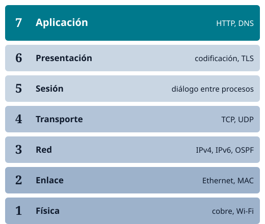

Capa 7: así llega una página web a tu navegador
Este sitio está hecho solo con HTML, vive en un repositorio de GitHub y se levanta en cualquier computador con un contenedor de Docker. Es el laboratorio de HTTP del curso Internet: redes y comunicaciones IP.
Somos el grupo 04: Alejandro Marín Aguilar, Misael Gallo Tangarife y Nelson Garzón Soleto, estudiantes de la Universidad de Ibagué.

El curso
Internet: redes y comunicaciones IP es una electiva profesional que explica cómo funciona la arquitectura de Internet, desde los modelos OSI y TCP/IP hasta los protocolos con los que usamos la web todos los días. Los conceptos se practican en laboratorios con Packet Tracer, Wireshark y máquinas virtuales con Linux.
- Unidad 1, modelos de referencia: OSI y TCP/IP, cableado estructurado, capa física y acceso al medio.
- Unidad 2, capa de Internet: IPv4 e IPv6, planes de direccionamiento y enrutamiento estático y dinámico (RIPv2 y OSPFv2).
- Unidad 3, transporte y aplicación: TCP, UDP, DNS y HTTP/HTTPS. Este laboratorio pertenece a esta unidad.
HTTP en pocas líneas
HTTP (Protocolo de Transferencia de Hipertexto) funciona en la capa de aplicación con un esquema de pregunta y respuesta: el cliente pide un recurso y el servidor contesta. Por debajo usa TCP, y cuando se añade cifrado con TLS se llama HTTPS.
- El navegador resuelve el nombre del sitio a una dirección IP con DNS.
- Abre una conexión TCP con el servidor, normalmente al puerto 80 (HTTP) o 443 (HTTPS).
- Envía una petición con un método, una ruta y unas cabeceras.
- El servidor responde con un código de estado, cabeceras y el contenido, por ejemplo un archivo HTML.
- El navegador interpreta el HTML y pide los demás recursos que necesite: hojas de estilo, imágenes y otros archivos.
Una petición y su respuesta
GET /index.html HTTP/1.1
Host: localhost:8001
Accept: text/html
HTTP/1.1 200 OK
Server: nginx
Content-Type: text/html
Content-Length: 5120| Método | Para qué sirve |
|---|---|
GET | Pedir un recurso, como una página o una imagen. |
POST | Enviar datos al servidor, por ejemplo un formulario. |
PUT | Reemplazar un recurso existente. |
DELETE | Eliminar un recurso. |
HEAD | Pedir solo las cabeceras, sin el contenido. |
| Código | Significado |
|---|---|
200 | OK: la petición salió bien. |
301 | El recurso cambió de dirección de forma permanente. |
404 | El recurso no existe en el servidor. |
500 | Error interno del servidor. |
Integrantes del grupo 04
-

Alejandro Marín Aguilar
Estudiante de octavo semestre de Ingeniería de Sistemas. Le interesa el desarrollo de software y trabajar en equipo.
Ver su página -

Misael Gallo Tangarife
Estudiante de la Universidad de Ibagué que disfruta construir proyectos de software en equipo.
Ver su página -

Nelson Garzón Soleto
Estudiante de la Universidad de Ibagué que disfruta construir proyectos de software en equipo.
Ver su página
Cómo replicar este sitio
Con Git y Docker instalados, estos tres comandos levantan el sitio en cualquier máquina:
git clone URL_DEL_REPOSITORIO
cd redes-http-grupo04
docker compose up -d --buildDespués abre http://localhost:8001 en el navegador. Las instrucciones completas están en el archivo README.md del repositorio.